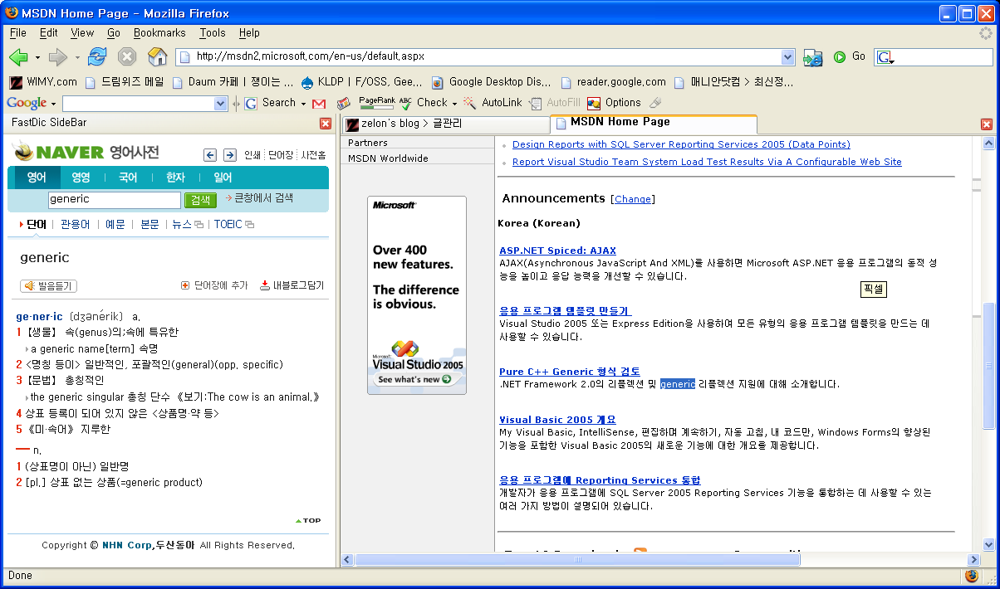

2006-06-02 12:03:04
https://addons.mozilla.org/firefox/278/
http://xguru.net/blog/328.html
내가 firefox 를 설치하면 꼭 설치하게 되는 기능 중 하나인 fastdic 을 소개한다. ALT 키를 누르고 웹 브라우저의 영어 단어를 클릭하면 사전 웹 사이트를 열어주면서 특정 단어를 쿼리해준다. 즉, 특정 영어 단어를 클릭하면 그 뜻을 보여주게 된다.
ALT 키가 아닌 다른 키를 누르고 클릭하거나, 특정 다른 사전 사이트를 띄우게 할 수도 있다. 나는 아래의 url 설정을 쓴다.
http://endic.naver.com/small.naver?query=$
